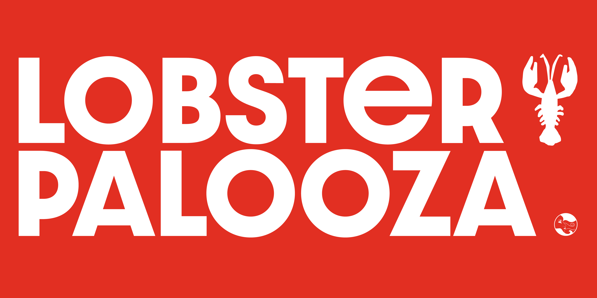

LOBSTER PALOOZA
celebrating summer with a one-off menu
identity design
client Circe Restaurant & Bar
Located on 50 Weybosset St in Providence, Rhode Island, Circe Restaurant & Bar looked to celebrate and give back to the community with a limited summertime menu featuring the iconic lobster roll of New England cuisine. The identity for this campaign features a bright lobster red, playful and modern typography, and hand-drawn icons to capture the fun, fresh, and fleeting feeling of this summertime menu.



Special thanks to owners Carlo Carlozzi, Kyle Poland, and Chef Simon Keating.